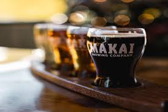
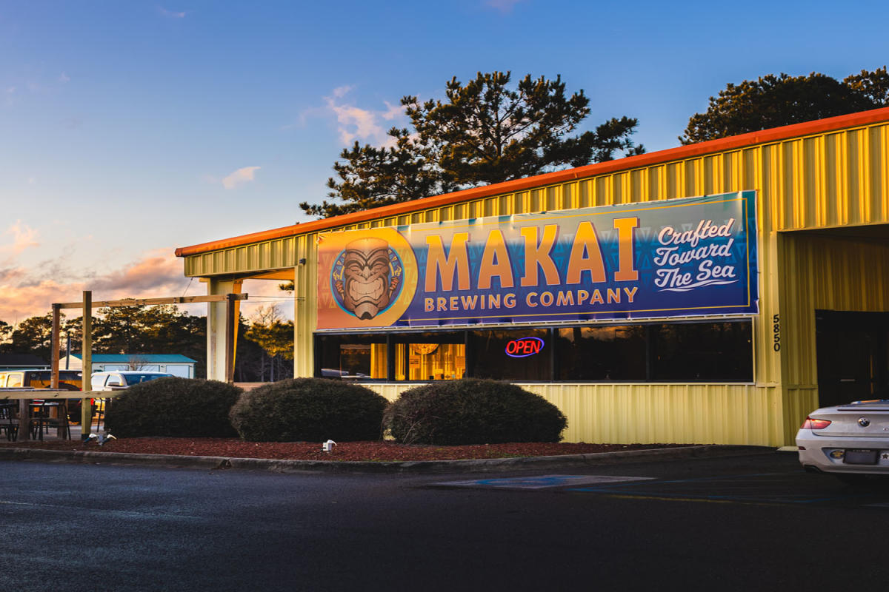

Makai is spacious and has both indoor and outdoor seating. There is plenty of seating on the inside, not including the bar space. This is a great place for events or music. Bad Eatz is the name of the food truck on site which serves Tex-Mex food, perfect for events hosted here. Makai frequently hosts live music with a variety of different artists and other special events. The vibe and overall atmosphere was very fun and inviting. I love the theme of beers crafted by the sea, which is perfect for the area. Located off Highway 17 in Ocean Isle Beach, North Carolina. Go check it out!
Makai Overview
Ocean Isle Beach, NC



see my reviews from here